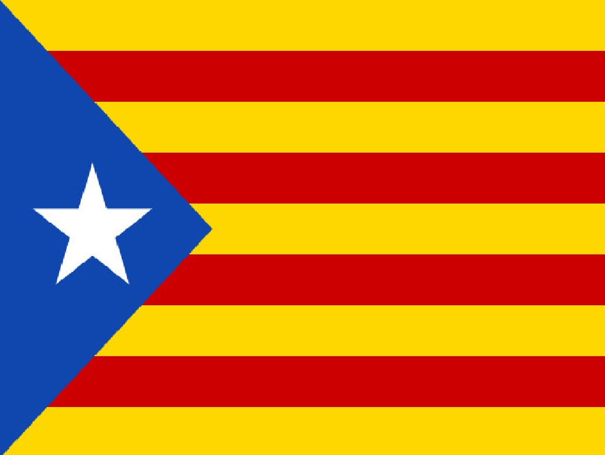

 |
27 Oct 2017 (16:30) Parliament of Catalonia accepted and announced an independence from Spain My congratulations to the Catalan Republic. They have been waiting for this event many hundreds of years. Finally, they are independent; the will of Great people has been realized. Bureaucrats, sultans of empires and wheeler-dealers are shocked. Today it is a new future national holiday and the Page in the victory of a Grand Nation. They are truly unlike others. It is an example for imitation and it is a victory over the politicians treating with disdain to their peoples. Also, it is a victory over the hypocritical, deceitful and putrescent "stability" created by politicians for their own comfort. This people made a precedent in the great cause of realizing their national identity! Publication date: 27.10.2017 |